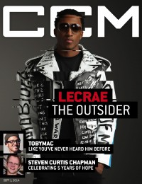
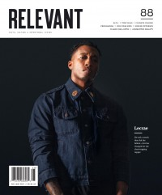

Lecrae
 |
| May 2013 Christianity Today |
 |
| 1 September 2014 CCM Digital |
 |
| January 2016 Relevant |
 |
| July 2017 Relevant |
Media coverage:
- Nov 2006 in CCM "Insider: Stop The Music!", by Andree Farias
- Jan 2011 in Relevant "The Drop: Lecrae", by Ryan Hamm
- Sep 2012 in CCM Digital "Defying Gravity", by Andrew Greer
- Sep 2012 in Relevant "On His New Album, New Son and Leading a New Era of Hip-Hop", by Tyler Huckabee
- May 2013 in Christianity Today "W.W.Jay-Z", by Russell D. Moore, Owen Strachan
- Sep 2013 in CCM Digital "Tour Spotlight: Inspiration Celebration Tour, Chicago Gospel Music Festival at Ellis Park, Chicago, IL", by Andy Argyrakis
- Nov 2013 in Relevant "Slices: Lecrae's New Act"
- 1 Mar 2014 in CCM Digital "Tour Spotlight: The Winter Jam 2014 Tour Spectular, Part One", by Andy Argyrakis
- Sep 2014 in Relevant "Lecrae", by Tyler Huckabee
- 1 Sep 2014 in CCM Digital "The Outsider: Lecrae Embraces Life on the Fringe", by Caroline Lusk
- Jan 2016 in Relevant "The Lecrae You Don't Know", by Aaron Cline Hanbury
- Jul 2017 in Relevant "This Isn't The Same Lecrae", by Aaron Cline Hanbury
Albums & reviews:
2004: Real Talk
2006: After The Music Stops
2008: Rebel
2011: Rehab: Deluxe Edition
2012: Gravity
2013: Church Clothes 2
2019: Let The Trap Say Amen with Zaytoven
2020: Restoration
2006: After The Music Stops
2008: Rebel
- Jun 2009 in Living With Teenagers, by Randy Williams
- Jan 2011 in Living With Teenagers, by Randy Williams
- Jan 2011 in CCM Digital, by Matt Conner
- Mar 2011 in YouthWorker, by Matt Conner
2011: Rehab: Deluxe Edition
2012: Gravity
- Oct 2012 in CCM Digital, by Andy Argyrakis
2013: Church Clothes 2
- 1 Jan 2014 in CCM Digital, by Andy Argyrakis
- 1 Nov 2014 in CCM Digital, by Andrew Greer
2019: Let The Trap Say Amen with Zaytoven
2020: Restoration
Award Summary (Nominations / Wins)
Dove Awards- 2007 Dove Awards
- Rap/Hip Hop Album: After The Music Stops
- Rap/Hip Hop Recorded Song: "Jesus Muzik"
- Rap/Hip Hop Album: Rebel
- Rap/Hip Hop Album: Rehab
- Rap/Hip Hop Recorded Song: "Background"
- Artist
- Rap/Hip Hop Album: Rehab: The Overdose
- Rap/Hip Hop Recorded Song: "Hallelujah"
- Rap/Hip Hop Recorded Song: "Overdose"
- Artist
- Rap/Hip Hop Album: Gravity
- Rap/Hip Hop Recorded Song: "Tell The World"
- Rap/Hip Hop Recorded Song: "I'm Good"
- Artist
- Rap/Hip Hop Recorded Song: "Dear Mr. Christian"
- Gospel Performance: "Help"
- Contemporary Gospel/Urban Recorded Song: "Help"
- Songwriter
- Artist
- Recorded Music Packaging: Anomaly
- Rap/Hip Hop Album: Anomaly
- Rap/Hip Hop Recorded Song: "All I Need Is You"
- Rock/Contemporary Recorded Song: "Messengers (ft. For King & Country)"
- Contemporary Christian Artist
- Artist
- Rap/Hip Hop Album: Church Clothes 3
- Rap/Hip Hop Recorded Song: "Can't Do You"
- Song: "I'll Find You"
- Song: "Blessings"
- Songwriter
- Short Form Music Video: "I'll Find You (ft. Tori Kelly)"
- Rap/Hip Hop Album: Let The Trap Say Amen
- Rap/Hip Hop Recorded Song: "Get Back Right"
- Rap/Hip Hop Recorded Song: "Set Me Free"
- Best Gospel Album: Gravity
- Best Rap Performance: "All I Need Is You"
- Best Contemporary Christian Music Performance/Song: "Messengers"
- Best Contemporary Christian Music Performance/Song: "Sunday Morning"
Published articles:
© 2011 CMnexus. Last updated April 2021. Contact: editor -AT- cmnexus -DØT- org About